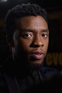
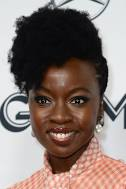
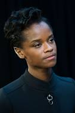
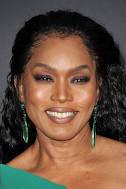
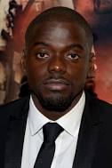
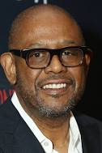
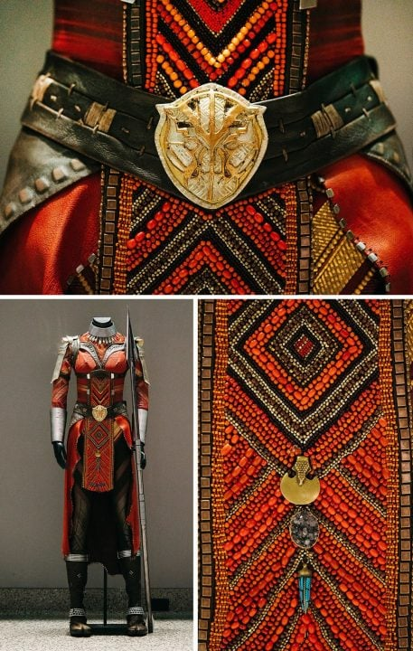
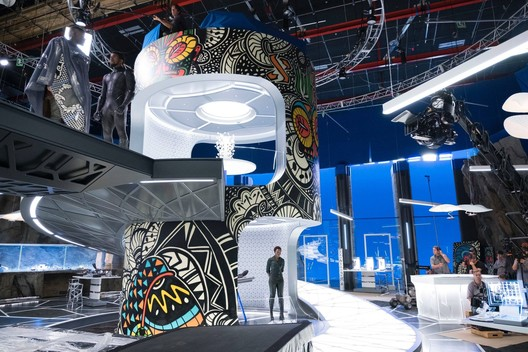

Sinopse
Sinopse
Pantera Negra é um filme de super-herói da Marvel, mas diferente da maioria, ele mistura ação com temas profundos sobre identidade, cultura africana, responsabilidade e justiça social.
A história se passa principalmente em Wakanda, um país fictício localizado na África. Para o resto do mundo, Wakanda parece ser uma nação pobre e isolada. Porém, na realidade, é altamente desenvolvida tecnologicamente, graças a um metal raro e poderoso chamado vibranium, que caiu lá com um meteorito há milhares de anos.
O protagonista é T'Challa, o príncipe de Wakanda. Após a morte de seu pai, o rei T'Chaka (acontecimento mostrado no filme Capitão América: Guerra Civil, mas que é brevemente explicado no próprio Pantera Negra), ele volta para casa para assumir o trono. Além de se tornar rei, ele também assume o papel do Pantera Negra, um guerreiro místico e protetor de Wakanda, com força, agilidade e sentidos ampliados, graças a uma erva especial.
Mas o reinado de T'Challa é desafiado por Erik Killmonger, um ex-soldado americano que também tem direito ao trono de Wakanda. Ele cresceu longe da cultura wakandana, nos EUA, enfrentando violência, abandono e racismo. Ao descobrir suas raízes, Killmonger decide retornar e exigir seu lugar no trono — não apenas para governar, mas para usar o poder e a tecnologia de Wakanda para armar os oprimidos no mundo todo e liderar uma revolução global.
T'Challa, então, precisa lidar com a dor da perda, a pressão de liderar, e a responsabilidade de decidir se Wakanda deve continuar escondida ou ajudar o mundo — mesmo que isso signifique arriscar tudo. O filme é uma jornada de autoconhecimento, honra às tradições, e discussão sobre o que é ser um verdadeiro rei e herói.
 Elenco
Elenco
|
Ator |
Personagem |
|  |
Chadwick Boseman |
T’Challa / Pantera Negra |
|
Michael B. Jordan |
Erik Killmonger |
|
Lupita Nyong’o |
Nakia |
|  |
Danai Gurira |
Okoye |
|  |
Letitia Wright |
Shuri |
|  |
Angela Bassett |
Ramonda |
|  |
Daniel KAluuya |
W'Kabi |
|  |
Forest Whitaker |
Zuri |
|
Martin Freeman |
Everett K. Ross |
|
Andy Serkis |
Ulysses Klaue |
Desing
Figurino
O figurino criado por Ruth E. Carter foi inspirado em diversas culturas africanas. Cada tribo de Wakanda tem um estilo visual único:
- Tribo do Rio: roupas verdes com conchas e elementos aquáticos.
- Tribo da Fronteira: tons terrosos e peles.
- Dora Milaje: armaduras vermelhas inspiradas nas guerreiras africanas de Dahomey.

Arquitetura e Cenários
Wakanda mistura tradição e futuro em sua arquitetura. A cidade tem estruturas modernas com formas e texturas que lembram barro, madeira e pedra, sempre respeitando elementos culturais africanos.
"
Tecnologia Afro-futurista
A tecnologia de Wakanda é baseada no vibranium. O design dos equipamentos mistura elementos tribais com inovação futurista. É uma forte representação do Afrofuturismo, movimento que une cultura africana ancestral com ciência e tecnologia.

Maquiagem e Simbologia
As tribos usam tatuagens, marcas no rosto, piercings e pinturas corporais com significados culturais. A tatuagem dentro do lábio inferior, por exemplo, é usada para identificar wakandanos autênticos.
Reconhecimento
O design visual do filme foi tão impactante que ganhou três prêmios no Oscar:
- Melhor Figurino
- Melhor Design de Produção
- Melhor Trilha Sonora Original (composição de Ludwig Göransson)
Trilha Sonora
A trilha sonora de Pantera Negra é um dos elementos mais marcantes do filme, combinando sons tradicionais africanos com batidas modernas, hip-hop e orquestra sinfônica. Essa mistura ajuda a dar identidade à nação fictícia de Wakanda, unindo passado e futuro através da música.
A trilha sonora se divide em dois álbuns principais:
1. Trilha Sonora Original (Instrumental)
Composta por Ludwig Göransson, essa trilha acompanha as emoções e ações do filme com temas épicos, coros africanos e instrumentos tribais misturados a sons eletrônicos e orquestrais.
- Wakanda: Tema principal com sonoridade tribal e futurista.
- Killmonger: Mistura batidas de hip-hop com sons graves e tensos, refletindo o conflito do vilão.
- Waterfall Fight: Música intensa para as lutas de desafio pelo trono.
2. Álbum Oficial – Black Panther: The Album
Produzido por Kendrick Lamar, esse álbum traz músicas inspiradas no universo do filme, com letras que falam de poder, identidade, luta e cultura negra.
- All The Stars – Kendrick Lamar feat. SZA
- Pray for Me – The Weeknd feat. Kendrick Lamar
- King’s Dead – Jay Rock, Future, James Blake & Kendrick Lamar
Essas músicas foram tocadas em trailers, créditos e momentos promocionais do filme, ajudando a conectar a história com o público contemporâneo, principalmente jovens fãs de hip-hop e cultura urbana.
A trilha sonora teve grande impacto cultural, sendo indicada a prêmios como o Grammy e o Globo de Ouro.

 Bilheteria
Bilheteria
Pantera Negra foi um fenômeno mundial de bilheteria e um marco para a representatividade no cinema. O filme não apenas atraiu fãs da Marvel, mas também pessoas interessadas em cultura africana, empoderamento negro e diversidade nas telas.
Bilheteria:
- Bilheteria Mundial: Mais de 1,34 bilhão de dólares
- Bilheteria nos EUA: Cerca de 700 milhões de dólares
- Bilheteria Internacional: Aproximadamente 647 milhões de dólares
Com esses números, Pantera Negra se tornou:
- O filme solo de super-herói mais lucrativo da história (na época do lançamento)
- O primeiro filme da Marvel a receber uma indicação ao Oscar de Melhor Filme
- O filme mais assistido nos EUA em 2018
Impacto Cultural
O sucesso de bilheteria foi impulsionado não só pela qualidade do filme, mas pelo movimento social em torno dele. Escolas, comunidades negras e celebridades promoveram sessões coletivas, destacando a importância cultural de ver heróis negros em destaque em uma superprodução de Hollywood.
 Outros
Outros
Pantera Negra foi um verdadeiro marco na história do cinema, tanto pelas premiações quanto pelo impacto cultural e social. Foi o primeiro filme de super-herói indicado ao Oscar de Melhor Filme, e elevou o nível da representatividade negra nas telas de Hollywood.
Oscars (Academy Awards) – 2019
- Ganhou:
- Melhor Figurino – Ruth E. Carter
- Melhor Design de Produção – Hannah Beachler e Jay Hart
- Melhor Trilha Sonora Original – Ludwig Göransson
- Indicado também a:
- Melhor Filme
- Melhor Edição de Som
- Melhor Mixagem de Som
- Melhor Canção Original – "All the Stars" (Kendrick Lamar e SZA)
Outros Prêmios Importantes
- Grammy Awards: "All the Stars" – várias indicações, incluindo Gravação do Ano e Melhor Música
- BAFTA: Melhor Design de Produção (indicação)
- Screen Actors Guild (SAG): Melhor Elenco em Filme – VENCEDOR
- Critics’ Choice Awards: 3 vitórias, incluindo Melhor Figurino
Marcos Históricos
- Primeiro filme de super-herói a ser indicado ao Oscar de Melhor Filme.
- Primeiro filme da Marvel com elenco majoritariamente negro e foco na cultura africana.
- Ruth E. Carter foi a primeira mulher negra a ganhar o Oscar de Figurino.
- Hannah Beachler foi a primeira mulher negra indicada e vencedora em Design de Produção.
- Filme símbolo de representatividade, exibido gratuitamente em escolas e comunidades pelo mundo.
- Um dos 10 filmes mais assistidos do mundo em 2018 e recorde de vendas em pré-estreias nos EUA para um filme solo de herói.
"Pantera Negra" não foi apenas um sucesso de bilheteria, mas um símbolo de orgulho cultural e transformação dentro da indústria cinematográfica.